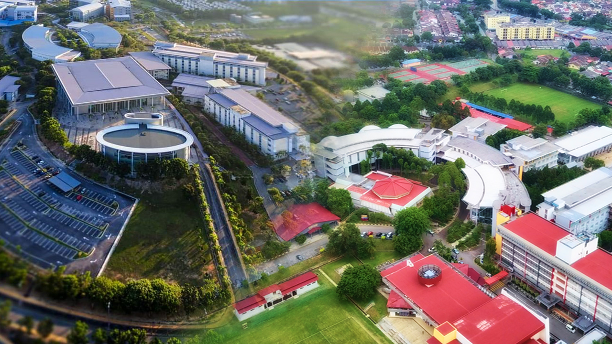
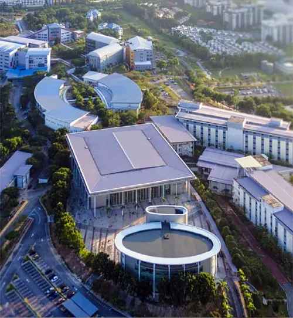
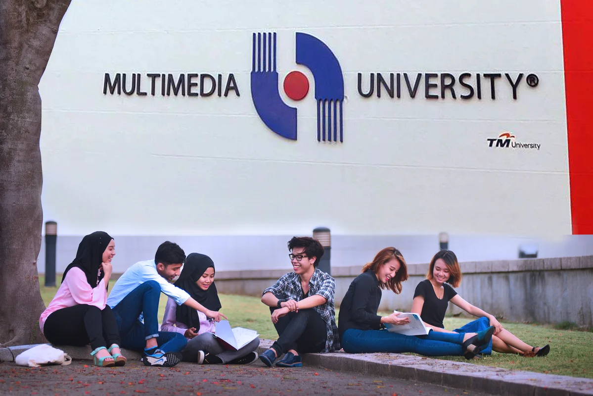
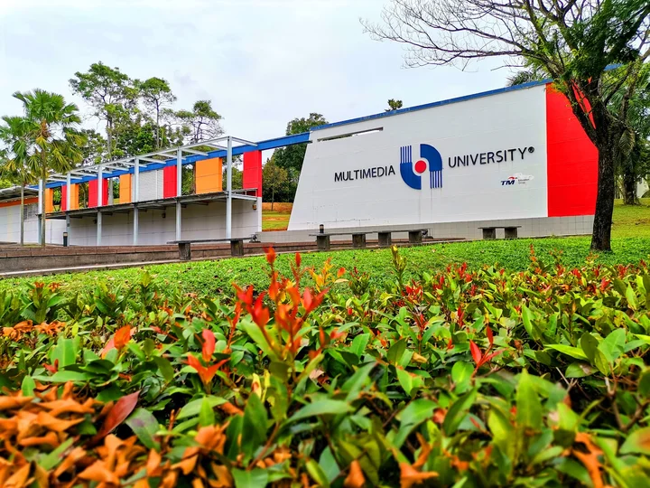

University overview
About Multimedia University
Multimedia University (MMU) is Malaysia's pioneer private university, established in 1996 by Telekom Malaysia (TM). Designed to serve as the technological engine for the country's Multimedia Super Corridor (MSC), MMU has evolved into a premier government-linked institution globally recognized for excellence in engineering, computing, creative multimedia, business, and law.
Awarded a 5-Star QS rating and recognized as a Premier Digital Tech Institution by MDEC, MMU fosters an innovative ecosystem where cutting-edge research intersects with hands-on industry collaboration. With a vibrant multicultural community and over 70,000 alumni worldwide, MMU continuously shapes digital leaders and tech entrepreneurs for the global economy.





International students
Study at Multimedia University as an international student
Compare Multimedia University courses, campuses, fees and entry requirements for your intended intake.
Programmes and tuition
Multimedia University MMU courses and fees for international students
| No | Programme | Duration | Total Fee (RM) | Estimated Yearly Programme Fee (RM) |
|---|---|---|---|---|
| 1 | Foundation in Management (2/010/3/0192) 06/24 (49589) | 1 year | RM 20,750 | RM 12,000 |
| 2 | Foundation in Business (03/010/3/0452) 03/27 (A7859) | 1 year | RM 20,750 | RM 12,000 |
| 3 | Diploma in Management (N/345/4/1116) 05/24 (MGA/PSAT2185) | 2 years | RM 26,500 | RM 13,250 |
| 4 | Diploma in Business Administration (R2/345/4/1045) 08/22 (47819) | 2 years | RM 26,500 | RM 13,250 |
| 5 | Diploma in Finance (/343 4/5/24 (MA/SATW) | 2 years | RM 26,500 | RM 13,250 |
| 6 | Diploma in Accounting (2/348/4/0371) 06/25 (46297) | 2 years | RM 31,500 | RM 15,750 |
| 7 | Diploma in Digital Business (N/345/4/1772) 01/26 (MQA/PSA1-4239) | 2 years | RM 26,500 | RM 13,250 |
| 8 | Bachelor of Finance (Hons.) (22/343/6/0105) 06/24 (A10480) | 3 years | RM 67,250 | RM 22,417 |
| 9 | Bachelor of Marketing (Hons.) (02/342/6/1100) 09/24 (45315) | 3 years | RM 67,250 | RM 22,417 |
| 10 | Bachelor of Analytical Economics (Hons.) (93/314/6/002) 02/27 (A7921) | 3 years | RM 67,250 | RM 22,417 |
| 11 | Bachelor of Business Management (Hons.) (12/345/6/0463) 06/24 (45316) | 3 years | RM 67,250 | RM 22,417 |
| 12 | Bachelor of Accounting (Hons.) (32/0411/6/0071) 06/26 (A10454) (03/041126/0072) 03/29 (MSA FA2052) | 3 years | RM 78,600 | RM 26,200 |
| 13 | Bachelor of Business Administration (Hons.) (Banking and Finance) (13/343/6/0001) 12/25 (MQA/FA1997) | 3 years | RM 67,250 | RM 22,417 |
| 14 | Bachelor of Business Administration (Hons.) (Human Resource Management) 02/345/6/3462) 07/24 (A10406) | 3 years | RM 67,250 | RM 22,417 |
| 15 | Bachelor of Business Administration (Hons.) (International Business) (13/340/6/0111) 03/27 (MBA/FA2053) | 3 years | RM 67,250 | RM 22,417 |
| 16 | Bachelor of Business Administration (Hons.) (Marketing Management) 2/345/6/3464 06/24 (410405) | 3 years | RM 67,250 | RM 22,417 |
| 17 | Bachelor of Business Administration (Hons.) Digital Business Management (22/345/6/1050) 06/22 (47951) | 3 years | RM 67,250 | RM 22,417 |
| 18 | Bachelor of Digital Enterprise Management (Hons.) ( 34576/1049) 05/22 ( RAB844) | 3 years | RM 67,250 | RM 22,417 |
Schedule remarks:
One-time Payment (Upon Acceptance) [All Programmes]:
- Registration Fee: RM 2,000
- International Processing Fee (Student Visa): RM 3,500
- Deposit: RM 1,500
Total Initial Fees: RM 7,000
Other Payment (After Enrolment):
- Trimester Fee (All UG Programmes): Long Trimester RM 160, Short Trimester RM 80.
- RM 400 (per year)
Note: All fees including the one-time payment, program fees and other related charges are currently listed before the 6% Sales & Service Tax (SST).
| No | Programme | Duration | Total Fee (RM) | Estimated Yearly Programme Fee (RM) |
|---|---|---|---|---|
| 1 | Foundation in Engineering (23/010/3/0087) 12/27 (46671) (03/010/3/0450) 03/27 (47857) | 1 year | RM 22,750 | RM 12,000 |
| 2 | Diploma in Electronic Engineering (72/523/4/10203) 01/25 (MQA/FA12837) | 2 years 9 months | RM 30,850 | RM 11,218 |
| 3 | Diploma in Mechanical Engineering (N/21 4/184) 03/28 (MQA/PA13480) | 2 years 9 months | RM 30,850 | RM 11,218 |
| 4 | Bachelor of Engineering (Hons.) Electrical (92/522/6/0038) 06/26 (MQA/FA 4863) | 4 years | RM 94,500 | RM 23,625 |
| 5 | Bachelor of Engineering (Hons.) Electronics (12/533/6/0167) 06/25 (2/1) | 4 years | RM 94,500 | RM 23,625 |
| 6 | Bachelor of Engineering (Hons.) Electronics Majoring in Telecommunications (72/523/6/0168) 06/26 (MQA/FA1865) | 4 years | RM 94,500 | RM 23,625 |
| 7 | Bachelor of Engineering (Hons.) Electronics Majoring in Computer (22/523/6/0166) 06/26 (MQA/FA4866) | 4 years | RM 94,500 | RM 23,625 |
| 8 | Bachelor of Electronics Engineering (Robotics & Automation) with Honours (23/523/6/0036) 12/27 (ΜΟΛ ΤΑ4749) | 4 years | RM 94,500 | RM 23,625 |
| 9 | Bachelor of Mechanical Engineering with Honours (R3/521/6/0027) 10/27 (MGA/FAB757) | 4 years | RM 94,500 | RM 23,625 |
| 10 | Bachelor of Science (Hons.) Intelligent Robotics (N/523/6/0318) 01/25 ( /PSA14238) | 3 years | RM 77,250 | RM 25,750 |
| 11 | Bachelor of Science (Honours) in Applied Artificial Intelligence (N/0611/6/0107 01/30 (MGA/PSA 18003) | 3 years | RM 77,250 | RM 25,750 |
Schedule remarks:
One-time Payment (Upon Acceptance) [All Programmes]:
- Registration Fee: RM 2,000
- International Processing Fee (Student Visa): RM 3,500
- Deposit: RM 1,500
Total Initial Fees: RM 7,000
Other Payment (After Enrolment):
- Trimester Fee (All UG Programmes): Long Trimester RM 160, Short Trimester RM 80.
- RM 400 (per year)
Note: All fees including the one-time payment, program fees and other related charges are currently listed before the 6% Sales & Service Tax (SST).
| No | Programme | Duration | Total Fee (RM) | Estimated Yearly Programme Fee (RM) |
|---|---|---|---|---|
| 1 | Foundation in Computing (3/0610/3/2007) 12/27 (8670) | 1 year | RM 21,750 | RM 12,000 |
| 2 | Foundation in Science and Technology 011/3/0205) 02/27 (47858) | 1 year | RM 21,750 | RM 12,000 |
| 3 | Diploma in Information Technology (3/451/4/0229) 12/27 (48553) ( 451/4/2010) 12/25 (47461) | 2 years | RM 28,000 | RM 14,000 |
| 4 | Bachelor of Computer Science (Hons.) in Software Engineering (22/451/6/0551) 02/25 ( ) | 3 years | RM 77,250 | RM 25,750 |
| 5 | Bachelor of Computer Science (Hons.) in Game Development (92/48)/6/0531) 02/25 (A5830) | 3 years | RM 77,250 | RM 25,750 |
| 6 | Bachelor of Computer Science (Hons.) in Data Science (172/481/6/0831) (12/25 (A5830) | 3 years | RM 77,250 | RM 25,750 |
| 7 | Bachelor of Computer Science (Hons.) Cybersecurity (12/481/6/0531) | 3 years | RM 77,250 | RM 25,750 |
| 8 | Bachelor of Information Technology (Hons.) Information Systems (22/481/6/0388) 06/24 (45216) | 3 years | RM 77,250 | RM 25,750 |
| 9 | Bachelor of Information Technology (Hons.) Data Communication and Networking (02/481/6/0440) 08/24 (43313) | 3 years | RM 77,250 | RM 25,750 |
| 10 | Bachelor of Information Technology (Hons.) Business Intelligence and Analytics (R3/481/6/0079) 12/25 (A7498) | 3 years | RM 77,250 | RM 25,750 |
| 11 | Bachelor of Computer Science (Hons.) Artificial Intelligence (R2/481/6/0786) 06/23 (A4187) | 3 years | RM 77,250 | RM 25,750 |
| 12 | Bachelor of Information Technology (Hons.) Security Technology (22/481/6/0439) 08/24 (45470) | 3 years | RM 77,250 | RM 25,750 |
Schedule remarks:
One-time Payment (Upon Acceptance) [All Programmes]:
- Registration Fee: RM 2,000
- International Processing Fee (Student Visa): RM 3,500
- Deposit: RM 1,500
Total Initial Fees: RM 7,000
Other Payment (After Enrolment):
- Trimester Fee (All UG Programmes): Long Trimester RM 160, Short Trimester RM 80.
- RM 400 (per year)
Note: All fees including the one-time payment, program fees and other related charges are currently listed before the 6% Sales & Service Tax (SST).
| No | Programme | Duration | Total Fee (RM) | Estimated Yearly Programme Fee (RM) |
|---|---|---|---|---|
| 1 | Foundation in Creative Multimedia (2010/3/0158) 12/25 (A9392) | 1 year | RM 20,500 | RM 12,000 |
| 2 | Diploma in 3D Modelling and Animation (9/23/4/2005) 05/27 ( WAB97) | 2 years 3 months | RM 30,550 | RM 13,578 |
| 3 | Diploma in Creative Multimedia (/213/4/0356) 11/24 (MQA/PSA12833) | 2 years | RM 30,250 | RM 15,125 |
| 4 | Diploma in Creative Audio (N/23174/0361) 07/24 (MBA/PLA12396) | 2 years | RM 30,250 | RM 15,125 |
| 5 | Diploma in Cinematography (N 2/3/4/0380) 02/25 (MGA/PSA13431) | 2 years | RM 30,250 | RM 15,125 |
| 6 | Bachelor of Multimedia (Hons.) (Advertising Design) 2/214/8/097) 08/24 (A10483) | 3 years | RM 77,250 | RM 25,750 |
| 7 | Bachelor of Multimedia (Hons.) (Animation) (12/213/4/0157)06/24 (A10487) | 3 years | RM 77,250 | RM 25,750 |
| 8 | Bachelor of Multimedia (Hons.) (Visual Effects) (N/221/4/0339) 05/24 (MGA/PSA12186) | 3 years | RM 77,250 | RM 25,750 |
| 9 | Bachelor of Cinematic Arts (Hons.) (10/213/6/0100) 01/23 (MQA/FA2287) | 3 years | RM 77,250 | RM 25,750 |
| 10 | Bachelor of Immersive Media Design (Hons.) (22/214/6/0098) 06/24 (419481) | 3 years | RM 77,250 | RM 25,750 |
Schedule remarks:
One-time Payment (Upon Acceptance) [All Programmes]:
- Registration Fee: RM 2,000
- International Processing Fee (Student Visa): RM 3,500
- Deposit: RM 1,500
Total Initial Fees: RM 7,000
Other Payment (After Enrolment):
- Trimester Fee (All UG Programmes): Long Trimester RM 160, Short Trimester RM 80.
- RM 400 (per year)
Note: All fees including the one-time payment, program fees and other related charges are currently listed before the 6% Sales & Service Tax (SST).
| No | Programme | Duration | Total Fee (RM) | Estimated Yearly Programme Fee (RM) |
|---|---|---|---|---|
| 1 | Foundation in Communication ( /221/3/0210) 04/26 (MGA/PSA14410) | 1 year | RM 16,750 | RM 12,000 |
| 2 | Diploma in Applied Communication (N/121/4/0258) 09/24 (MAGA PSA 12395) | 2 years | RM 26,500 | RM 13,250 |
| 3 | Bachelor of Communication (Strategic Communication) (Hons.) /321/6/0174) 04/25 (MGA/SWA223) | 3 years | RM 64,750 | RM 21,583 |
Schedule remarks:
One-time Payment (Upon Acceptance) [All Programmes]:
- Registration Fee: RM 2,000
- International Processing Fee (Student Visa): RM 3,500
- Deposit: RM 1,500
Total Initial Fees: RM 7,000
Other Payment (After Enrolment):
- Trimester Fee (All UG Programmes): Long Trimester RM 160, Short Trimester RM 80.
- RM 400 (per year)
Note: All fees including the one-time payment, program fees and other related charges are currently listed before the 6% Sales & Service Tax (SST).
| No | Programme | Duration | Total Fee (RM) | Estimated Yearly Programme Fee (RM) |
|---|---|---|---|---|
| 1 | Bachelor of Management (Hons.) ODL (03-0L/345/6/01-46) 03/29 (MQA/FA2078) | 5 years | RM 37,750 | RM 7,550 |
Schedule remarks:
One-time Payment (Upon Acceptance) [ODL]:
- Registration Fee: RM 2,000
- International Processing Fee (Student Visa): RM 500
- Deposit: RM 1,500
Total Initial Fees: RM 4,000
Other Payment (After Enrolment):
- ODL Programme Fee: RM 50 (Based on Programme)
- RM 400 (per year)
Note: All fees including the one-time payment, program fees and other related charges are currently listed before the 6% Sales & Service Tax (SST).
Download ONLINE DISTANCE EDUCATION PROGRAMMES (UNDERGRADUATE) (ZIP)
| No | Level | Duration | Fee (RM) |
|---|---|---|---|
| 1 | Level 1 (Beginner to Elementary) | 1 trimester | RM 3,900 |
| 2 | Level 2 (Lower Intermediate to Intermediate) | 1 trimester | RM 3,900 |
| 3 | Level 3 (Upper Intermediate to Advance) | 1 trimester | RM 3,900 |
Schedule remarks:
Note: All fees including the one-time payment, program fees and other related charges are currently listed before the 6% Sales & Service Tax (SST).
| No | Programme | Total Programme Fee (RM) | Estimated Yearly Fee (RM) |
|---|---|---|---|
| 1 | Master of Engineering (Telecommunications) (23/523/7/0011) 01/26 (A6741) | RM 37,750 | RM 25,875 |
| 2 | Master of Science in Engineering Business Management (R/345/7/0429) 10/23 (QA/SWA3414) | RM 35,200 | RM 25,250 |
| 3 | Master of Creative Multimedia (N/213/7/0325) 02/25 (MQA/PSA13433) | RM 29,000 | RM 24,650 |
| 4 | Master of Business Administration (R2/345/7/066) 03/25 (A11391) (23/345/7/0461) 05/29 (48069) | RM 27,750 | RM 23,600 |
Schedule remarks:
One Time Payment (Upon Acceptance) [Coursework/Mixed Mode]:
- Registration Fee: RM 2,000
- International Processing Fee (Student Visa): RM 3,500
- Deposit: RM 1,500
Total Initial Fees: RM 6,000
Other Payment (After Enrolment):
- Student Development Fee (per year): RM 200
Note: All fees including the one-time payment, program fees and other related charges are currently listed before the 6% Sales & Service Tax (SST).
| No | Programme | Total Programme Fee (RM) | Estimated Yearly Fee (RM) |
|---|---|---|---|
| 1 | Master of Business Administration (R3/345/7/9461) 05/29 (A8069) | RM 27,750 | RM 23,600 |
Schedule remarks:
One Time Payment (Upon Acceptance) [Coursework/Mixed Mode]:
- Registration Fee: RM 2,000
- International Processing Fee (Student Visa): RM 3,500
- Deposit: RM 1,500
Total Initial Fees: RM 6,000
Other Payment (After Enrolment):
- Student Development Fee (per year): RM 200
Note: All fees including the one-time payment, program fees and other related charges are currently listed before the 6% Sales & Service Tax (SST).
| No | Programme | Total Programme Fee (RM) |
|---|---|---|
| 1 | Master of Computer Science (N DL/06/13/7/0024) 11/25 (MQA/SWA14087) | RM 18,400 |
| 2 | Executive Master of Business Administration (NDL/S45/7/1099) 07/24 (MEJA/PSA 12023) | RM 22,500 |
| 3 | Master of Information Technology ( 0811/7/0027) 12/28 (MQA/PSA17388) | RM 18,400 |
Schedule remarks:
One Time Payment (Upon Acceptance) [ODL]:
- Registration Fee: RM 2,000
- International Processing Fee (Student Visa): RM 500
- Deposit: RM 1,500
Total Initial Fees: RM 4,000
Other Payment (After Enrolment):
- Student Development Fee (per year): RM 50
Note: All fees including the one-time payment, program fees and other related charges are currently listed before the 6% Sales & Service Tax (SST).
Download POSTGRADUATE ONLINE AND DISTANCE LEARNING (ODL) (ZIP)
| No | Programme | Yearly Programme Fee (RM) | Total Fee / Modules & Exam Fee (RM) |
|---|---|---|---|
| 1 | Master of Philosophy (Management) (22/345/7/6140) 06/22 (MQA/FA3003) (22/345/7/9144) 05/22 (A8146) | RM 4,500 | RM 8,100 (Min - 1 Year) / RM 3,600 |
| 2 | Master of Engineering Science (23/530/7/0003) 12/25 (A7889) (83/520/7/0030) 06/27 (A8271) | RM 4,500 | RM 6,150 (Min- 1 Year) / RM 1,650 |
| 3 | Master of Computing by Research (23/0611/7/0024) 05/27 (A8100) (23/0611/7/0025) 03/27 (A8127) | RM 4,500 | RM 6,150 (Min - 1 Year) / RM 1,650 |
| 4 | Doctor of Philosophy (Engineering) (R2-DL/520/8/0026) 03/29 (A8115) (22/520/8/0053) 06/28 (43415) | RM 4,500 | RM 12,750 (Min - 2 Years) / RM 3,750 |
| 5 | Doctor of Philosophy in Computing by Research (23/0611/8/0013) 05/27 (A8191) (23/0611/8/2014) 08/30 (269) | RM 4,500 | RM 12,750 (Min - 2 Years) / RM 3,750 |
| 6 | Doctor of Philosophy (Management) (23/345/8/3141) 05/29 (48128) (02/481/8/0037) 08/23 (4249) | RM 4,500 | RM 14,700 (Min - 2 Years) / RM 5,700 |
Schedule remarks:
One Time Payment (Upon Acceptance) [Research]:
- Registration Fee: RM 2,000
- International Processing Fee (Student Visa): RM 3,500
- Deposit: RM 500
Total Initial Fees: RM 7,000
Other Payment (After Enrolment):
- Student Development Fee (per year): RM 200
Note: All fees including the one-time payment, program fees and other related charges are currently listed before the 6% Sales & Service Tax (SST).
Download POSTGRADUATE BY RESEARCH - CYBERJAYA & MELAKA (ZIP)
| No | Programme | Yearly Programme Fee (RM) | Total Fee / Modules & Exam Fee (RM) |
|---|---|---|---|
| 1 | Master of Science (Creative Multimedia) (23/213/7/0306) 06/27 (A8168) | RM 4,500 | RM 6,150 (Min - 1 Year) / RM 1,650 |
| 2 | Master of Philosophy (Communication) ( /321/7/0237) 02/25 (MQA/PSA 13430) | RM 4,500 | RM 10,650 (Min - 2 Years) / RM 1,650 |
| 3 | Doctor of Philosophy (Creative Multimedia) (22/213/6/0227) 07/27 (40694) | RM 4,500 | RM 12,750 (Min - 2 Years) / RM 3,750 |
| 4 | Doctor of Philosophy (Communication) (2/0323/7/0011) 02/30 (MQA/SWA13430) | RM 4,500 | RM 17,250 (Min - 3 Years) / RM 3,750 |
Schedule remarks:
One Time Payment (Upon Acceptance) [Research]:
- Registration Fee: RM 2,000
- International Processing Fee (Student Visa): RM 3,500
- Deposit: RM 500
Total Initial Fees: RM 7,000
Other Payment (After Enrolment):
- Student Development Fee (per year): RM 200
Note: All fees including the one-time payment, program fees and other related charges are currently listed before the 6% Sales & Service Tax (SST).
| No | Programme | Yearly Programme Fee (RM) | Total Fee / Modules & Exam Fee (RM) |
|---|---|---|---|
| 1 | Master of Laws (4/380/7/0039) 04/21 (MQA/PA8385) | RM 4,500 | RM 12,600 (Min - 2 Years) / RM 3,600 |
| 2 | Doctor of Philosophy (Laws) (4/380/8/0038) 04/21 (MQA/PA6386) | RM 4,500 | RM 19,200 (Min - 3 Years) / RM 5,700 |
Schedule remarks:
One Time Payment (Upon Acceptance) [Research]:
- Registration Fee: RM 2,000
- International Processing Fee (Student Visa): RM 3,500
- Deposit: RM 500
Total Initial Fees: RM 7,000
Other Payment (After Enrolment):
- Student Development Fee (per year): RM 200
Note: All fees including the one-time payment, program fees and other related charges are currently listed before the 6% Sales & Service Tax (SST).
| No | Programme | Total Programme Fee (RM) |
|---|---|---|
| 1 | Doctor of Business Administration (22/345/B/1066) 02/23 (3712) | RM 55,200 |
Schedule remarks:
One Time Payment (Upon Acceptance) [Coursework/Mixed Mode]:
- Registration Fee: RM 2,000
- International Processing Fee (Student Visa): RM 3,500
- Deposit: RM 1,500
Total Initial Fees: RM 6,000
Other Payment (After Enrolment):
- Student Development Fee (per year): RM 200
Note: All fees including the one-time payment, program fees and other related charges are currently listed before the 6% Sales & Service Tax (SST).
Download fee schedule (ZIP)
Stored fee document for Multimedia University (MMU). Check the printed validity and terms.
MMU rankings: QS World, Asia & Malaysia
Verified . Each figure below names its ranking edition.
- QS World 2027
- #771–780
- QS Asia 2026
- #148
- Malaysia · QS World 2027
- #21
Malaysia positions are calculated among the 32 institutions listed by QS under Malaysia in its World 2027 table. This is not a separate government ranking. An = sign marks a tie. Institutions in the same world-rank band share a national position range because their exact order is not published.
QS World and QS Asia use different methods. Overall university positions do not establish the ranking of a particular BBA, IT, MBA or other program.
Explore the campus
Campus gallery
Questions and answers
Frequently Asked Questions About Multimedia University MMU
View ranking sources
Multimedia University (MMU) - QS profile · QS World University Rankings 2027 - official results spreadsheet (v1.1) · MMU - QS Asia 2026 result · QS World University Rankings 2027 - release corrections
What is the QS World ranking of Multimedia University (MMU) in 2027?
MMU is ranked #771–780 in QS World University Rankings 2027.
Sources: Multimedia University (MMU) - QS profile · QS World University Rankings 2027 - official results spreadsheet (v1.1)
What is the QS Asia ranking of Multimedia University (MMU) in 2026?
MMU is ranked #148 in QS Asia University Rankings 2026.
Sources: MMU - QS Asia 2026 result
What is the ranking of Multimedia University (MMU) in Malaysia?
MMU has Malaysia position #21 among the 32 institutions listed under Malaysia in QS World 2027, calculated from the published table. The world-rank band does not establish a more precise national order. This is a position within the QS World table, not a separate government ranking or a QS Asia position.
Sources: QS World University Rankings 2027 - official results spreadsheet (v1.1) · QS World University Rankings 2027 - release corrections
Do QS Stars, SETARA or partner rankings give Multimedia University (MMU) an overall QS rank?
QS Stars and SETARA are ratings, not numerical positions in a QS league table. A subject ranking applies to that subject, and a partner university rank belongs to the named partner. Check the institution, ranking system and edition before comparing.
Sources: QS Stars rating system
What are MMU's tuition fees for international students?
Find your program and campus in the fee chart on this page, then read the relevant student category, fee columns and remarks. The schedule uses labels including Total Fee (RM), Estimated Yearly Programme Fee (RM), Total Programme Fee (RM), Estimated Yearly Fee (RM), Yearly Programme Fee (RM), Total Fee / Modules & Exam Fee (RM). Different programs and fee periods cannot be combined into one reliable tuition price. Amounts not shown need an intake-specific quotation.
What are MMU's tuition fees for Bangladeshi students?
Bangladeshi applicants should check the international-student rate for their program and intake. This page does not establish a separate Bangladesh-only tuition rate or guarantee eligibility for a discount. Check nationality-specific charges, deposits, visa costs and scholarship conditions in the schedule and your written offer.
Does the MMU fee chart show fees per semester or per year?
Use the exact period printed in each column. A first-year payment, fee per semester and full-program total describe different costs. Where a semester or annual breakdown is absent, request a payment schedule; dividing a program total can give the wrong instalment amount.
Where can I find the official MMU fee chart?
The download links on this page open the stored fee documents. One-Step is a student guidance website. Confirm the document's edition, campus, student category and validity with the university before accepting an offer or paying. The university's current written fee schedule and offer determine the amount payable.
Which year do the MMU fees apply to?
Use any effective dates and intake restrictions stated in the fee documents and course remarks. A single validity year has not been confirmed for every table on this page. A recent page update does not mean all underlying fees are for the current year.
Does MMU offer scholarships for international students?
Check any scholarship, adjusted tuition or discount columns alongside their conditions. A listed reduction is not an automatic award for every international or Bangladeshi applicant. Ask for the scholarship name, eligibility, application deadline, renewal conditions and final payable fee in writing.